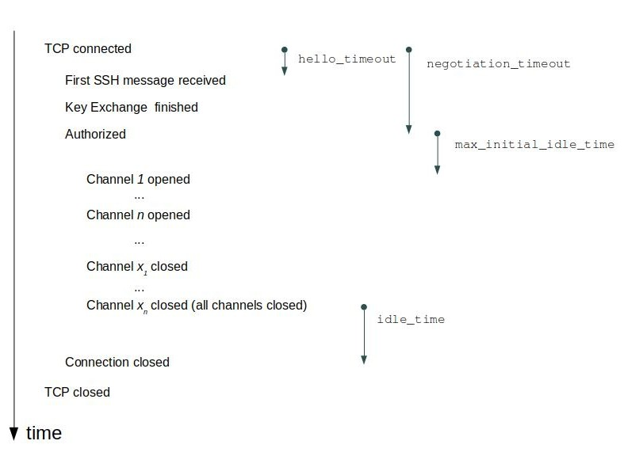

Hardening
View SourceIntroduction
The Erlang/OTP SSH application is intended to be used in other applications as a library.
Different applications using this library may have very different requirements. One application could be running on a high performance server, while another is running on a small device with very limited cpu capacity. For example, the first one may accept many users simultaneously logged in, while the second one wants to limit them to only one.
That simple example shows that it is impossible to deliver the SSH application with default values on hardening options as well on other options that suites every need.
The purpose of this guide is to discuss the different hardening options available, as a guide to the reader. Configuration in general is described in the Configuration in SSH chapter.
Resilience to DoS attacks
The following applies to daemons (servers).
DoS (Denial of Service) attacks are hard to fight at the node level. Here are firewalls and other means needed, but that is out of scope for this guide. However, some measures could be taken in the configuration of the SSH server to increase the resilence. The options to use are:
Counters and parallelism
max_sessions - The maximum number of simultaneous sessions that are accepted at any time for this daemon. This includes sessions that are being authorized. The default is that an unlimited number of simultaneous sessions are allowed. It is a good candidate to set if the capacity of the server is low or a capacity margin is needed.
max_channels - The maximum number of channels that are accepted for each connection. The default is unlimited.
parallel_login - If set to false (the default value), only one login is handled at a time. If set to true, the number of simultaneous login attempts are limited by the value of the max_sessions option.
Timeouts
hello_timeout - If the client fails to send the first ssh message after a tcp connection setup within this time (in milliseconds), the connection is closed. The default value is 30 seconds. This is actually a generous time, so it can lowered to make the daemon less prone to DoS attacks.
negotiation_timeout - Maximum time in milliseconds for the authentication negotiation counted from the TCP connection establishment. If the client fails to log in within this time the connection is closed. The default value is 2 minutes. It is quite a long time, but can lowered if the client is supposed to be fast like if it is a program logging in.
idle_time - Sets a time-out on a connection when no channels are left after closing the final one. It defaults to infinity.
max_initial_idle_time - Sets a time-out on a connection that will expire if no channel is opened on the connection. The timeout is started when the authentication phase is completed. It defaults to infinity.
A figure clarifies when a timeout is started and when it triggers:

Verifying the remote daemon (server) in an SSH client
Every SSH server presents a public key - the host key - to the client while keeping the corresponding private key in relatively safe privacy.
The client checks that the host that presented the public key also possesses the private key of the key-pair. That check is part of the SSH protocol.
But how can the client know that the host really is the one that it tried to
connect to and not an evil one impersonating the expected one using its own
valid key-pair? There are two alternatives available with the default key
handling plugin ssh_file. The alternatives are:
Pre-store the host key - * For the default handler ssh_file, store the valid host keys in the file
known_hostsand set the option silently_accept_hosts tofalse.- or, write a specialized key handler using the SSH client key API that accesses the pre-shared key in some other way.
Pre-store the "fingerprint" (checksum) of the host key - * silently_accept_hosts
Verifying the remote client in a daemon (server)
Password checking - The default password checking is with the list in the user_passwords option in the SSH daemon. It could be replaced with a pwdfun plugin. The arity four variant (
pwdfun_4()) can also be used for introducing delays after failed password checking attempts. Here is a simple example of such a pwdfun:fun(User, Password, _PeerAddress, State) -> case lists:member({User,Password}, my_user_pwds()) of true -> {true, undefined}; % Reset delay time false when State == undefined -> timer:sleep(1000), {false, 2000}; % Next delay is 2000 ms false when is_integer(State) -> timer:sleep(State), {false, 2*State} % Double the delay for each failure end end.If a public key is used for logging in, there is normally no checking of the user name. It could be enabled by setting the option
pk_check_usertotrue. In that case the pwdfun will get the atompubkeyin the password argument.
Hardening in the cryptographic area
Algorithm selection
One of the cornerstones of security in SSH is cryptography. The development in crypto analysis is fast, and yesterday's secure algorithms are unsafe today. Therefore some algorithms are no longer enabled by default and that group grows with time. See the SSH (App) for a list of supported and of disabled algorithms. In the User's Guide the chapter Configuring algorithms in SSH describes the options for enabling or disabling algorithms - preferred_algorithms and modify_algorithms.
Re-keying
In the setup of the SSH connection a secret cipher key is generated by co-operation of the client and the server. Keeping this key secret is crucial for keeping the communication secret. As time passes and encrypted messages are exchanged, the probability that a listener could guess that key increases.
The SSH protocol therefore has a special operation defined - key re-negotiation or re-keying. Any side (client or server) could initiate the re-keying and the result is a new cipher key. The result is that the eves-dropper has to restart its evil and dirty craftmanship.
See the option rekey_limit for a description.
Hardening of the SSH protocol - both daemons and clients
Disabling shell and exec in a daemon
A daemon has two services for evaluating tasks on behalf of a remote client. The exec server-side service takes a string provided by the client, evaluates it and returns the result. The shell function enables the client to open a shell in the shell host.
Those service could - and should - be disabled when they are not needed. The
options exec and
shell are enabled per default but could be set
to disabled if not needed. The same options could also install handlers for
the string(s) passed from the client to the server.
The id string
One way to reduce the risk of intrusion is to not convey which software and which version the intruder is connected to. This limits the risk of an intruder exploiting known faults or peculiarities learned by reading the public code.
Each SSH client or daemon presents themselves to each other with brand and version. This may look like
SSH-2.0-Erlang/4.10or
SSH-2.0-OpenSSH_7.6p1 Ubuntu-4ubuntu0.3This brand and version may be changed with the option id_string. We start a daemon with that option:
ssh:daemon(1234, [{id_string,"hi there"}, ... ]).and the daemon will present itself as:
SSH-2.0-hi thereIt is possible to replace the string with one randomly generated for each connection attempt. See the reference manual for id_string.
Client connection options
A client could limit the time for the initial tcp connection establishment with the option connect_timeout. The time is in milliseconds, and the initial value is infinity.
The negotiation (session setup time) time can be limited with the parameter
NegotiationTimeout in a call establishing an ssh session, for example
ssh:connect/3.